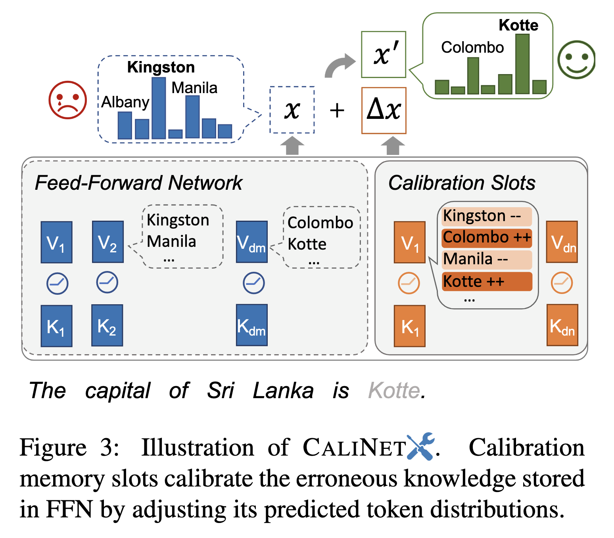

论文笔记 - Calibrating Factual Knowledge in Pretrained Language Models
1. Information
Title: Calibrating Factual Knowledge in Pretrained
Language Models
Link: CaliNET Paper
Source: Empirical Methods in Natural Language
Processing (EMNLP)
Date: 2022
2. Summary
本文提出了一种名为 CALINET 的方法，用于在无需从头开始重新训练的情况下对预训练语言模型 (PLMs) 中的事实性知识进行校准。作者首先通过对比知识评估 (Contrastive Knowledge Assessment, CKA) 方法检测 PLMs 中的错误知识，然后引入 CALINET，这是一种轻量级方法，通过添加新参数来纠正错误事实。该方法通过知识探测和问答任务进行评估，结果显示其在事实正确性和泛化能力方面有显著提升。此外，研究还通过分析模型的记忆槽提供了对校准机制的见解。
3. Background
预训练语言模型（如 BERT、T5 等）被广泛应用于 NLP 任务，其内置的事实性知识库特性使其能支持问答、事实验证等任务。然而，模型中存储的事实知识可能包含错误，直接影响下游任务的性能。相比于从头训练或外部知识注入，本文探索了一种高效的轻量级方法校准 PLMs 内部的错误知识。
4. Research Objective
本文的主要研究目标包括：
- 使用对比评估方法检测 PLMs 中存储的错误知识。
- 提出一种轻量级方法 (CALINET)，通过添加新参数来纠正错误事实，而不修改原始模型。
- 通过知识密集型任务评估校准后的 PLMs 的有效性和泛化能力。
5. Method
5.1 对比知识评估 (Contrastive Knowledge Assessment, CKA)
为了检测 PLMs 中的错误知识，作者提出了对比知识评估 (CKA) 方法，通过对比模型对正确事实和错误事实的预测来评估。给定一个事实三元组⟨s, r, o⟩，其中 s 是主体，r 是关系，o 是宾语，CKA 分数计算如下： \[ \mathrm{CKA}_M(s, r, o)=\frac{P_M(o \mid s, r)}{E_{r^{\prime}}\left[P_M\left(o \mid s, r^{\prime}\right)\right]+\alpha} \] 其中，\(P_M(o \mid s, r)\) 是模型对正确事实的预测概率，\(E_{r^{\prime}}\left[P_M\left(o \mid s, r^{\prime}\right)\right]\) 是错误事实（使用错误关系 \(r^{\prime}\)）的期望概率，\(\alpha\) 是平滑因子。如果CKA 分数低于 1，则表明模型对错误事实的预测概率更高，暗示模型存在错误知识。
注：
CKA 的核心目标是评估 PLMs 中存储的事实知识，并识别其中错误的部分。在实际运行中，CKA 针对的是从特定知识数据集中采样的实例，而不是直接对所有可能的事实进行评估。
选择实例的依据：
- 数据来源：从知识三元组（如
<subject, relation, object>）组成的数据集（如 T-REx）中选取目标实例。- 样本规模：实验中通常会选取固定数量（例如 100 或 1000 个三元组）进行评估，而非整个知识库。
- 优先级：某些重要关系或高频关系可能被优先选择，以测试模型在关键知识点上的表现。
负样本的构建：
- 关系替换（Relation Replacement）：
- 替换三元组中的关系 \(r\)，生成负样本提示。
- 示例：
- 正样本提示：
[Obama was born in Hawaii.]- 负样本提示：
[Obama was died in Hawaii.]或[Obama worked in Hawaii.]- 替换后的关系应与原关系语义矛盾，但依然语法合理。
- 负样本模板设计：
- 为每种关系设计专门的负样本模板，以保证负样本与正样本的对比性。
- 示例：对于
<subject, subclass of, object>，正样本模板为[X] is a subclass of [Y]，负样本模板可能为[X] is a parent class of [Y]。- 数量控制：
- 每个正样本会生成多个负样本（通常为 3 个），以保证负样本的多样性和稳定性。
- 负样本设计的特点：
- 负样本的语义需与正样本矛盾，而不是随机生成。
5.2 校准机制 (CaliNET)
关键组件: 校准的核心在于扩展原模型中的前馈网络 (FFN)，添加校准记忆槽（calibration memory slots）。

原始 FFN 的输出为： \[ FFN(H) = GELU(HK^T)V \] 添加的校准项为： \[ \Delta F F N(H)=G E L U\left(H \tilde{K}^T\right) \tilde{V} \] 校准后的输出为： \[ F F N^{\prime}(H)=F F N(H)+\Delta F F N(H) \]
- \(\tilde{K}, \tilde{V}\) 是校准记忆槽的参数矩阵，维度远小于原 FFN 参数矩阵。
校准过程:
- 构建包含多个表面形式的校准数据集。
- 冻结原模型参数，仅优化校准记忆槽的参数。
5.3 校准数据构建
- 基础数据： 使用 PARAREL 数据集，该数据集包含 38 种关系的多种自然语言模板，是构建多样化表面形式的理想基础数据集。
- 目标事实： 从知识图谱（如 T-REx
数据集）中抽取目标三元组
<subject, relation, object>，每个三元组代表一个事实。
多样化表面形式的生成**
- 多模板生成：
- 针对每种关系 \(r\)，选用多种模板生成自然语言表示。
- 示例：对于 <Obama, born in, Hawaii>，可以生成以下多种表述：
- "Obama was born in Hawaii."
- "The birthplace of Obama is Hawaii."
- "Hawaii is the place where Obama was born."
引入负样本**
负样本构建：
每个正样本生成 3 个语义矛盾的负样本，通过替换三元组的关系或实体生成。
- 示例：
- 正样本：
"Obama was born in Hawaii." - 负样本：
"Obama was died in Hawaii."或"Obama worked in Hawaii."
- 正样本：
- 确保负样本逻辑上矛盾，但语言结构合理。
- 示例：
6. Evaluation
6.1 错误知识检测
作者从 T-REx 数据集中采样了 100 个和 1000 个事实三元组，并使用 CKA 检测 T5-base 和 T5-large 模型中的错误知识。错误率(False Rate)定义为 CKA 分数低于 1 的事实比例，结果表明 T5-base 的错误率约为 50%，T5-large 略低，但仍处于较高水平，这表明 PLMs 中存在大量错误知识。
6.2 知识校准
校准后的模型从知识建模能力（原始测试集和对抗测试集的困惑度）和语言建模能力（掩码测试数据的困惑度）两个方面进行评估。结果显示，CALINET 显著降低了错误率，并提高了模型生成事实正确预测的能力，同时不影响其一般语言建模能力。
6.3 可扩展性和泛化能力
研究还探索了 CALINET 的可扩展性，发现其能够同时校准超过 5000 个事实的 60% 以上。此外，校准后的知识在开放域问答任务中表现良好，提高了模型对原本回答错误的问题的性能。
7. Conclusion
本文展示了 CALINET 作为一种轻量级且有效的方法，能够在无需重新训练的情况下对 PLMs 中的事实性知识进行校准。CALINET 成功减少了错误知识，并提高了下游任务中的事实正确性。此外，通过分析模型的记忆槽，研究还揭示了校准机制，表明 CALINET 能够以泛化的方式调整模型的预测。
8. Notes
8.1 举例说明 CaliNET 的运行过程
1. 新知识错误的发现
假设你发现模型对于以下事实知识存在错误：
- 错误知识：
Obama was born in Beijing.- 正确知识：
Obama was born in Hawaii.
2. 数据集的重新构建
为了校准这个新知识错误，需要为新错误构建校准数据集。
步骤：
正样本生成：
使用多种自然语言模板生成正确事实的表述：
- 示例：
"Obama was born in Hawaii.""The birthplace of Obama is Hawaii.""Hawaii is the place where Obama was born."将这些模板转换为模型的输入：
2输入：Obama was born in [MASK].
目标输出：Hawaii负样本生成：
替换关系或宾语，生成与正确事实语义矛盾的负样本：
- 示例：
"Obama was born in Beijing.""Obama was born in Shanghai.""Obama got married in Hawaii."将这些负样本添加到校准数据集中：
2输入：Obama was born in [MASK].
目标输出：Beijing数据集划分：
- 确保新生成的数据集与原来的校准数据集不冲突。
- 划分训练集、验证集和测试集，确保模板无重叠。
示例：
类型 输入句子 目标输出 正样本 Obama was born in [MASK].Hawaii 负样本 Obama was born in [MASK].Beijing
3. 更新 CaliNET 的校准参数
重新训练 CaliNET 对新错误进行校准。
训练方法：
- 冻结 PLM 的原始参数，只训练 CaliNET 的校准槽（Calibration Memory Slots）。
- 使用重新构建的数据集对新错误知识进行训练。
- 更新训练好的校准槽参数。
4. 总结
当发现新的知识错误时：
- 生成校准数据集：针对新知识错误构建正负样本。
- 重新训练校准槽：冻结原始模型参数，仅优化 CaliNET 的校准槽。
- 加载更新的校准槽：将新的校准槽参数加载到模型中即可实现对新知识错误的校准。